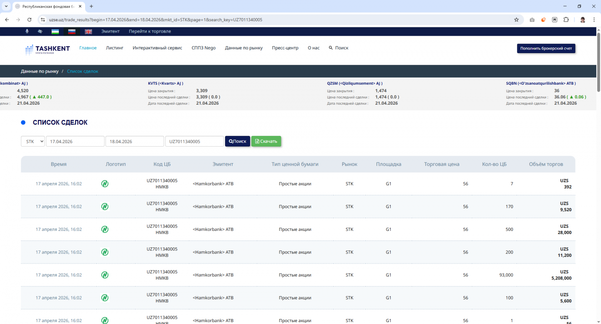
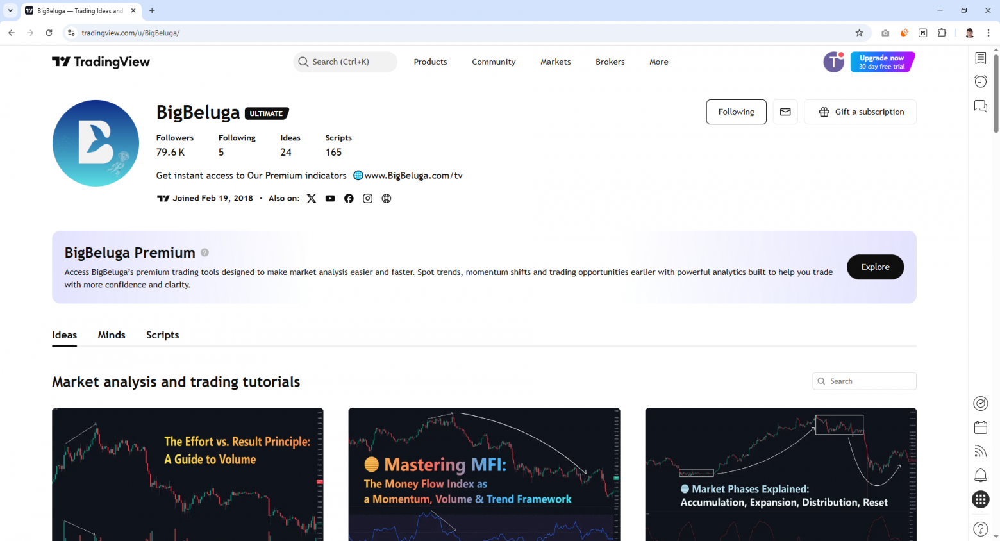
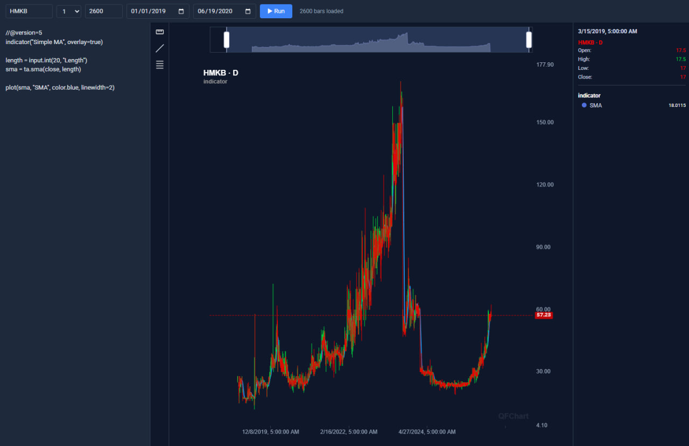
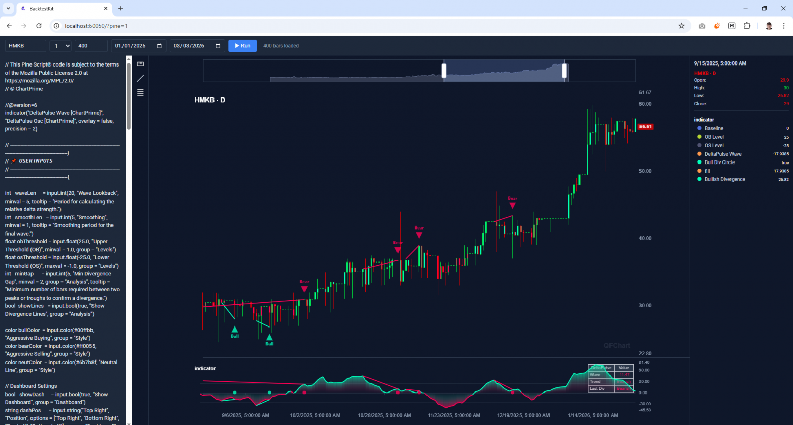
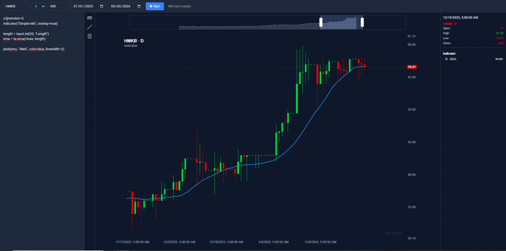

The source code discussed in this article is published in this repository
The Pine Script ecosystem contains a huge number of technical analysis tools. However, TradingView itself is not available everywhere. For example, regional stock exchanges of emerging markets that are simply not on TradingView at all — no data, no trading.
When instead of a clear price chart I see raw aggregate trades with the ability to download only one month in Excel (given a 6-hour trading day and constant holidays), I feel blind. The registration button leads nowhere.

Beyond the price chart, to avoid being limited to standard Excel, I wanted to apply the full range of Open Source tools rather than reinventing the wheel.

The first script downloads pages with trades. Excel could have been used, but it doesn't include minutes:
async function main() {
const buildUrl = (p: number) =>
`https://uzse.uz/trade_results?begin=${begin}&end=${end}&mkt_id=${mktId}&page=${p}&search_key=${symbol}`;
const browser = await chromium.launch({ headless: true });
const page = await browser.newPage();
const firstHtml = await fetchPage(page, buildUrl(1));
fs.writeFileSync(path.join(TMP_DIR, "trades_page_1.html"), firstHtml, "utf8");
const totalPages = getLastPage(firstHtml);
console.log(`Total pages: ${totalPages}`);
for (let p = 2; p <= totalPages; p++) {
const html = await fetchPage(page, buildUrl(p));
fs.writeFileSync(path.join(TMP_DIR, `trades_page_${p}.html`), html, "utf8");
console.log(`Downloaded page ${p}/${totalPages}`);
}
await browser.close();
console.log(`Done. HTML saved to ${TMP_DIR}`);
}
The second script imports into MongoDB:
function parseHtmlTable(html: string, pageIndex: number) {
const rows: object[] = [];
const trRegex = /<tr[\s\S]*?<\/tr>/gi;
const tdRegex = /<td[^>]*>([\s\S]*?)<\/td>/gi;
const tagRegex = /<[^>]+>/g;
let rowIndex = 0;
const urlKey = extractUrlKey(html);
let trMatch: RegExpExecArray | null;
while ((trMatch = trRegex.exec(html)) !== null) {
const rowHtml = trMatch[0];
const cells: string[] = [];
let tdMatch: RegExpExecArray | null;
while ((tdMatch = tdRegex.exec(rowHtml)) !== null) {
cells.push(tdMatch[1].replace(tagRegex, " ").replace(/\s+/g, " ").trim());
}
if (cells.length < 10) continue;
const symbolParts = cells[2].split(/\s+/).filter(Boolean);
const volumeParts = cells[9].split(/\s+/).filter(Boolean);
const time = parseRuDate(cells[0]);
const symbol = symbolParts[0] ?? "";
const tradePrice = parseNumber(cells[7]);
const quantity = parseNumber(cells[8]);
const volume = parseNumber(volumeParts[volumeParts.length - 1] ?? "");
const hash = crypto
.createHash("sha1")
.update(`${symbol}|${time?.toISOString()}|${tradePrice}|${quantity}|${volume}|${pageIndex}|${rowIndex}|${urlKey}`)
.digest("hex");
rowIndex++;
rows.push({ time, symbol, issuer: cells[3], securityType: cells[4], market: cells[5], platform: cells[6], tradePrice, quantity, volume, hash });
}
return rows.filter((r: any) => r.time !== null);
}

Trading was halted for a week from 12.08.2023 to 21.08.2023. It looks alarming, so we ask Claude what happened during that period. We get a reasoned answer with references.
Reason for the crash: an additional share issuance that tripled the authorized capital.
At the annual general meeting of shareholders on May 26, 2023, a decision was made to increase the bank's authorized capital from 107.77 billion soums to 323.32 billion soums — i.e. approximately 3x — through retained earnings. The new share issue was registered by the regulator on August 7, 2023.
The shares were placed through a private subscription among existing shareholders included in the register, formed on the 10th day from the date of state registration of the issue — meaning the register was fixed approximately on August 17, 2023.
The profit is not paid out in cash but is converted into shares.

I picked the first indicator I came across. It seems we sell at the red bearish line price and buy at the green bullish one. The important thing is that the complex visualization worked.

You can also view the history. It is visible that the price moved far above SMA(20) several times. The same pattern: several days without trading before it. Looks like a single-price auction day.
File ./modules/editor.module.ts:
import { addExchangeSchema } from "backtest-kit";
import { CandleModel } from "../schema/Candle.schema";
import "../config/setup";
addExchangeSchema({
exchangeName: "mongo-exchange",
getCandles: async (symbol, interval, since, limit) => {
const candles = await CandleModel.find(
{ symbol, interval, timestamp: { $gte: since.getTime() } },
{ timestamp: 1, open: 1, high: 1, low: 1, close: 1, volume: 1, _id: 0 }
)
.sort({ timestamp: 1 })
.limit(limit)
.lean();
return candles.map(({ timestamp, open, high, low, close, volume }) => ({
timestamp,
open,
high,
low,
close,
volume,
}));
},
});
Via npm start:
{
"name": "backtest-kit-project",
"version": "1.0.0",
"description": "Backtest Kit trading bot project",
"main": "index.js",
"homepage": "https://backtest-kit.github.io/documents/article_07_ai_news_trading_signals.html",
"scripts": {
"start": "node ./node_modules/@backtest-kit/cli/build/index.mjs --editor"
},
"keywords": [],
"author": "",
"license": "ISC",
"type": "commonjs",
"dependencies": {
"@backtest-kit/cli": "^7.1.0",
"@backtest-kit/graph": "^7.1.0",
"@backtest-kit/pinets": "^7.1.0",
"@backtest-kit/ui": "^7.1.0",
"agent-swarm-kit": "^2.5.1",
"backtest-kit": "^7.1.0",
"functools-kit": "^2.2.0",
"garch": "^1.2.3",
"get-moment-stamp": "^1.1.2",
"mongoose": "^8.23.0",
"ollama": "^0.6.3",
"playwright": "^1.59.1",
"volume-anomaly": "^1.2.3"
}
}
Market participants cannot hire a Pine Script developer
They are hard to find on the market and there is nowhere to place them: there is no TradingView infrastructure. Writing indicator visualizations is a technically complex task that AI will not solve — a human is needed.
News sentiment does not affect stock prices
An indicator is calibrated on historical data. Historical data becomes invalid if market sentiment has changed. Uzbekistan news is not media-prominent.
Party policy is investment
The only news source that affects sentiment is the president of the republic. He called it a shared responsibility of the entire international community to help such regions through investment in their economies and development.
You can read more about the influence of news sentiment on the market.
This is exactly the reason why indicators stopped working on major markets: the new value of an indicator itself has become news.